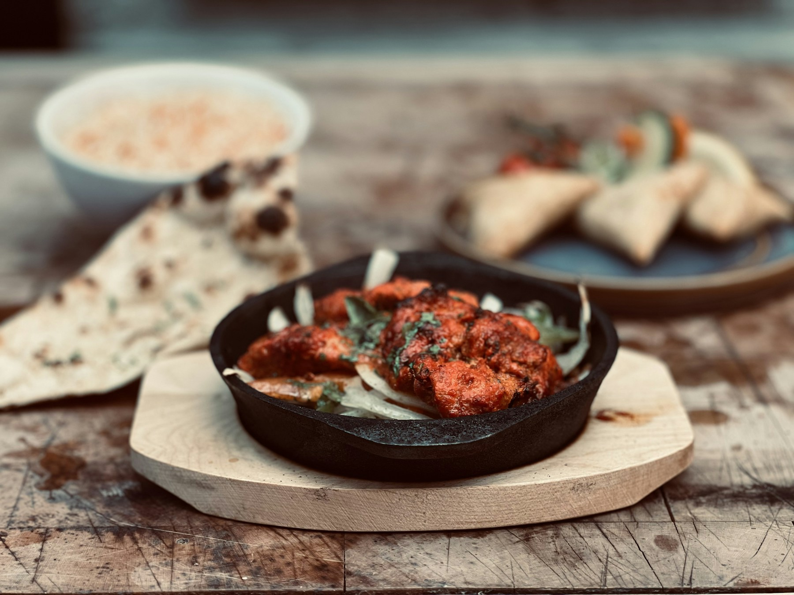

Indiaas restaurant bij het Vondelpark
TulipIndian Restaurant
Verse kruiden, de hitte van de tandoor en een kaart vol kip, lam, mutton, vis, garnalen en vegetarische gerechten. Wij serveren halal.
Maandag en woensdag t/m zaterdag open vanaf 15:30
Welkom bij Tulip
Tulip staat voor eindeloos genieten van eten, gastvrijheid en een warme sfeer.
Verse kruiden en ingrediënten worden met zorg bereid, zodat elke smaak zuiver blijft. Op de kaart vindt u een uitgebreide keuze aan gerechten van het Indiase subcontinent: met kip, lam en mutton, met vis en king prawns, en een flink aantal vegetarische en vegan gerechten.
U vindt ons aan de Amstelveenseweg 71, vlak bij het Vondelpark en het Museumplein.
- HalalWij serveren halal eten
- DinerVanaf 15:30 uur
- AfhalenOnline bestellen en ophalen
- AircoOok op warme dagen fijn zitten
- Gratis wifiVoor iedere gast

Aanraders van de kaart
Een paar favorieten om mee te beginnen. De hele kaart staat hieronder.
Vooraf
- Aloo Papri Chaat€ 8,50
- Hara Bhara Paneer Tikka€ 9,50
- Pani Puri / Golgappe€ 7,50
- Samosa (meat)€ 7,50
- King Prawns Butterfly€ 9,00
Hoofdgerecht
- Paneer Butter Masala + rijst€ 20,50
- Chicken Kadahi + rijst€ 21,50
- Mutton Rogan Josh + rijst€ 25,50
- King Prawn Curry + rijst€ 23,50
- Lamb Biryani€ 22,50
- Lamb Korma + rijst€ 23,50
Menukaart
De gerechten staan zoals op onze kaart, in het Engels. Hoofdgerechten zijn met basmatirijst, tenzij anders vermeld.
Soepen & voorgerechten
Soepen
- Chicken Soup€ 6,50
A flavorful chicken soup with the twist of Indian spices.
- Dal Soup vegan€ 5,00
Delicate North Indian lentil soup
- Muli Gatawany Soup€ 6,50
Colonial style curry soup made with chicken and lentils (served either hot or medium).
- Tomato Soup€ 5,00
A very smooth and thin to mildly thick-textured tomato soup.
Vegetarische voorgerechten
- Aloo Papri Chaat€ 8,50
Aloo Papdi Chaat is very special and popular Indian street food where Papdi’s are lightly spiced crackers which are generally deep fried or baked and mixed with potatoes, curd, chutneys and Indian spices.
- Aloo Tikki€ 7,50
Spicy potato cakes coated in a chickpea batter creating a delicious little snack.
- Hara Bhara Paneer Tikka€ 9,50
Paneer/cottage cheese and cut vegetables are marinated in Indian spices, ginger- garlic paste, yogurt and coriander-mint chutney, grilled in the tandoor.
- Onion Bhaji€ 5,50
The classic Indian snack of spiced onion fritters served with dip.
- Paneer Pakora€ 7,50
Mildly spiced pieces of cottage cheese dipped in a gram flour batter and then lightly fried.
- Pani Puri / Golgappe€ 7,50
Crispy hollow pastry filled with sweet, spicy, tangy juice and chutneys (Most Popular Indian Street food)
- Samosa (2 Piece)€ 6,50
Mini fried pastries, filled with seasonal vegetables and served with a selection of Indian chutneys.
- Tulip Mix Veg Starters€ 11,50
An irresistible assortment of vegetarian starters.
Voorgerechten met vlees of vis
- Chicken Pakora€ 8,50
Sizzling Indian starter of marinated chicken breast given the Tandoor treatment.
- Chicken Tikka€ 9,50
Boneless chicken mildly marinated in our own ginger spice paste, and cooked in the Tandoor.
- Hot Chicken Wings€ 8,50
Chicken wings marinated in Indian spices and roasted in the Tandoor
- King Prawns Butterfly€ 9,00
King prawns flavored with freshly grounded spices, and served on a bed of garden salad.
- Samosa (Meat)€ 7,50
Mini fried pastries, filled with chicken and served with a selection of Indian chutneys.
- Seekh Kebab€ 8,50
Mouth-watering Mughlai dish of mildly spiced minced meat (lamb and chicken), mixed with freshly chopped herbs before being cooked in the Tandoor.
- Tandoori Chicken€ 10,50
Famous red chicken, marinated in yoghurt and Indian spices, roasted in tandoor oven.
- Tulip Mix Non Veg Starters€ 13,50
An irresistible assortment of Non Veg starters.
Uit de tandoor
Grillgerechten uit de kleioven, met rijst.
- Tandoori Chicken€ 21,50
Tender chicken pieces dipped into a yoghurt marinade and baked in the Tandoor. Tasting notes of ginger, garlic and paprika.
- Tandoori Chicken Tikka€ 21,50
Boneless chicken mildly marinated in our own ginger spice paste, and cooked in the Tandoor.
- Tandoori Chicken Tikka Garlic€ 22,00
Garlic infused chicken pieces bathed in a spicy sauce, and finished in the Tandoor.
- Tandoori Fish Tikka€ 20,50
Seasoned marinated fish, roasted in the Tandoor.
- Tandoori Kebab€ 21,50
Marinated tender minced lamb and chicken meat with spices, ginger, garlic and green peppers, rolled around a skewer and grilled in the Tandoor.
- Tandoori Lamb Chop€ 25,00
Cooked in the Tandoor, juicy lamb chops dipped in a flavorsome yoghurt marinade.
- Tandoori Paneer Tikka€ 20,50
Juicy chunks of Indian cottage cheese dressed in spices, and grilled with fresh paprika and onions.
- Tandoori Prawns€ 24,50
Fresh king prawns covered with a yoghurt dressing and baked in the Tandoor.
- Tandoori Sizzler€ 27,00
A special combination of different Tandoori grill dishes.
Biryani
- Chicken Biryani€ 21,50
Succulent chicken with Middle Eastern spices cooked slowly, then folded into basmati rice and chopped nuts.
- Lamb Biryani€ 22,50
Slow cooked seasoned lamb married with basmati rice and dried fruit.
- Prawn Biryani€ 23,50
Marinated king prawns cooked in the Tandoor, and then folded into basmati rice. Finished off with a sprinkling of chopped nuts.
- Veg Biryani€ 19,50
Seasonal vegetable selection tossed with herbs and spices, then combined with fragrant basmati rice.
Kip
Alle kipgerechten met basmatirijst.
- Butter Chicken€ 22,50
Tandoori Chicken Tikka tossed into a slightly sweet creamy butter sauce.
- Chicken Balti€ 20,50
Rich in flavour pieces of chicken breast cooked in a seasoned curry gravy.
- Chicken Chili Garlic€ 20,50
Fried chicken fillet with garlic chilli, onion, tomatoes and herbs (slightly spicy)
- Chicken Dhansak€ 19,50
An authentic Parsi dish a medium spiced stew of boneless chicken and lentils with a fresh burst of lemon juice
- Chicken Kadahi€ 21,50
Northern Indian delicacy of boneless chicken pieces served in a masala gravy
- Chicken Korma€ 21,50
Tender boneless chicken simmered in a mildly spiced coconut sauce.
- Chicken Madras€ 21,50
A post-colonial recipe inspired from southern India featuring boneless chicken cooked in a hot chilli gravy.
- Chicken Pal€ 22,50
Pieces of chicken breast cooked in a very hot sauce. (hotter than vindaloo)
- Chicken Saag€ 19,50
Spiced boneless chicken tossed in pureed spinach.
- Chicken Tikka Jalfrezi€ 21,50
Pieces of chicken breast with chopped onions, paprika and tomatoes cooked in an intensely flavoured thick curry sauce.
- Chicken Tikka Masala€ 22,50
Marinated chicken from the Tandoor oven thrown into a creamy curry sauce with paprika and onions.
- Chicken Vindaloo€ 21,50
Hugely popular in Goa - pieces of chicken and potato in a fiery chilli sauce.
- Lemon Chicken€ 21,50
The easiest and crazy delicious chicken with tangy and sweet lemon sauce.
Lam & mutton
Met basmatirijst. Mutton is geitenvlees.
Lam
- Lamb Balti€ 22,50
Rich in flavour, pieces of lamb cooked in a seasoned curry gravy
- Lamb Chili Garlic€ 23,50
Fried lamb with garlic, chilli, onion, tomatoes and herbs (slightly spicy)
- Lamb Chop Masala€ 23,50
Lamb chops marinated in a seasoned yoghurt sauce, before being grilled in the Tandoor.
- Lamb Dhansak€ 22,50
Surrounded by lentils and with a fresh hint on citrus, lamb cooked slowly in a medium spiced curry sauce.
- Lamb Jalfrezi€ 22,50
A flavoursome thick curry gravy, featuring tender boneless lamb and chunks of onion, paprika and tomatoes.
- Lamb Kadahi€ 23,50
Northern Indian delicacy of boneless lamb pieces served in a masala gravy.
- Lamb Korma€ 23,50
Featuring roasted almonds and dried fruit, a mildly spiced curry with succulent pieces of braised lamb.
- Lamb Madras€ 22,50
A creation from colonial times, chunks of tender lamb in a hot chilli curry sauce.
- Lamb Pal€ 23,50
Boneless lamb and pieces of potato cooked in a very hot curry sauce (hotter than vindaloo)
- Lamb Rogan Josh€ 23,50
Classic Kashmiri dish of aromatic tender lamb chunks, cooked in a gravy of browned onions and spices.
- Lamb Vindaloo€ 22,50
Boneless lamb and pieces of potato cooked in a Goa inspired hot curry sauce.
Mutton
- Mutton Madras€ 24,50
A creation from colonial times, goat cooked in a hot chilli curry sauce.
- Mutton Rogan Josh€ 25,50
Classic Kashmiri dish, goat cooked in a gravy of browned onions and spices.
Garnalen & vis
Met basmatirijst.
King prawns
- King Prawn Curry€ 23,50
Prawns cooked slowly in a rich spicy tomato sauce.
- King Prawn Jalfrezi€ 24,50
King prawns, onions, paprika and tomatoes cooked in a spice-rich gravy.
- King Prawn Madras€ 23,50
A creation from colonial times prawns in a hot chilli curry sauce.
- King Prawn Masala€ 24,50
Prawns delicately massaged with a Punjabi spice rub and then cooked in a curry sauce with paprika.
- King Prawn Vindaloo€ 23,50
Prawns and pieces of potato cooked in a Goa inspired hot curry sauce.
Vis
- Fish Madras€ 20,50
A creation from colonial times - pieces of white fish in a hot chilli curry sauce.
- Fish Masala€ 20,00
White fish pieces delicately massaged with a Punjabi spice rub and then cooked in a curry sauce with paprika.
- Fish Vindaloo€ 20,50
White fish and pieces of potato cooked in a Goa inspired hot curry sauce.
Vegetarisch & vegan
Met basmatirijst. Vegan staat erbij.
- Aloo Gobi€ 17,00
Chopped potatoes and cauliflower florets cooked with roasted spices.
- Bhartha€ 17,50
Mashed roasted aubergine married with onions and tomatoes.
- Bhindi€ 17,50
Sliced okra tossed with onions, tomatoes and spices.
- Chana Masala vegan€ 17,50
Punjabi style chickpeas dish, rich in flavor with light citrus notes.
- Dal Makhni€ 17,50
Whole black lentils cooked slowly before being finished with butter, cream and spices.
- Dal Tadka vegan€ 17,50
A Tulip favorite, yellow lentils cooked in a base of ghee, tomatoes, onions and spices.
- Mix Vegetable Curry vegan€ 17,50
- Paneer Butter Masala€ 20,50
A colorful dish comprising of homemade cottage cheese, tomatoes, paprika and onions.
- Paneer Tikka Masala€ 20,50
Seasoned cottage cheese cooked in the Tandoor, then finished in a curry sauce with tomatoes, paprika and onions.
- Saag Paneer€ 18,50
Pieces of flash-fried cottage cheese, placed on a bed of blended spinach.
- Shahi Paneer€ 20,50
Delicate cottage cheese pieces simmered in a creamy, tomato-based sauce.
- Veg Navratan Korma€ 20,50
Crunchy seasonal vegetables cooked in a creamy coconut sauce, mixed with roasted almonds and raisins.
Brood
Vers gebakken in de tandoor.
- Aloo Paratha€ 5,00
Layered whole wheat bread with spiced potatoes.
- Butter Naan€ 4,50
Leavened white flour bread baked in the Tandoor.
- Cheese Naan€ 5,50
Leavened white flour bread stuffed with cheese.
- Garlic Naan€ 4,50
Leavened white flour bread garnished with crushed garlic.
- Lacha Paratha€ 4,50
Layered whole wheat bread prepared with butter.
- Onion Naan€ 5,00
Leavened white flour bread filled with spiced onions, baked in the tandoor.
- Paneer Paratha€ 5,50
Layered whole wheat bread with spiced cottage cheese.
- Peshawari Naan€ 5,50
Leavened white flour bread filled with nuts for added taste and texture.
- Plain Naan€ 3,50
Leavened white flour bread baked in the Tandoor with butter.
- Tandoori Roti vegan€ 3,00
Whole wheat bread made in clay oven, served plain or with butter.
Erbij
- Basmati Rice€ 5,00
Renowned basmati rice served simply or with an added saffron aromatic.
- Mango Chutney€ 2,50
As an accompaniment, slightly tangy, mango-based jelly.
- Mixed Pickle€ 2,50
For added accent to your meal pickled and spiced mango, lime and vegetables.
- Papadums€ 2,50
Ingeniously made using lentil flour, spiced with wafer crisp compliments any appetizer perfectly.
- Plain Yoghurt€ 2,50
- Raita€ 3,50
Seasoned yoghurt with freshly chopped cucumber and tomatoes.
- Tulip Mix Salad€ 6,50
Desserts
- Brownie€ 7,50
A brownie is an originally American dessert - consisting of a fairly dense flat pastry made of chocolate and baked on a baking tray.
- Classic Ice Cream€ 7,00
Choice of Vanilla or Chocolate or Coconut or Pistachio.
- Gajjar Ka Halwa€ 7,50
A combination of nuts, milk, sugar, khoya and ghee with grated carrot. It is a light nutritious dessert.
- Gulab Jamun€ 7,50
Dumplings of reduced milk served in a warm, fragrant sugar syrup.
- Gulab Jamun With Ice Cream€ 9,00
Warm Indian dessert accompanied with vanilla ice cream.
- Kheer€ 7,00
Basmati rice pudding garnished with dried nuts.
- Kulfi€ 7,00
Traditional Indian frozen dessert flavoured with cardamom and nuts.
- Mango Shake€ 6,50
Shake with mango flavour.
- Patiala Shahi€ 9,50
Dessert pairing of Kulfi and Kheer Kesari.
- Premium Mango Ice Cream€ 7,50
Full flavoured ice cream served with whipped cream.
- Rasmalai€ 8,50
Dumplings made from quark drenched in sweetened, thickened milk subtle flavored with cardamom.
Dranken
- Appelsap€ 4,00
- Coca Cola€ 4,00
- Coca Cola Light/Zero€ 4,00
- Fanta€ 4,00
- Mango Juice€ 4,00
- Mango Lassi€ 4,50
- Mineral Water (Large)€ 5,50
- Mineral Water (Small)€ 3,00
- Orange Juice€ 4,00
- Sprite€ 4,00
- Tonic€ 4,00
- Yoghurt Lassi Salty€ 4,50
- Yoghurt Lassi Sweet€ 4,50

Liever thuis eten?
Alles van de kaart kunt u ook afhalen. Bestel online en haal uw bestelling op aan de Amstelveenseweg, of bel ons even.
Reserveer een tafel
Stuur ons uw voorkeur voor datum en tijd, dan bevestigen wij uw reservering.
Wilt u op korte termijn komen eten? Bel dan liever even, dan weet u het meteen.
020 400 4102Contact & openingstijden
| Maandag | 15:30 – 23:00 |
|---|---|
| Dinsdag | Gesloten |
| Woensdag | 15:30 – 23:00 |
| Donderdag | 15:30 – 23:00 |
| Vrijdag | 15:30 – 23:30 |
| Zaterdag | 15:30 – 23:30 |
| Zondag | Bel ons voor de tijden |
Amstelveenseweg 71
1075 VV Amsterdam
020 400 4102
contact@tulipindianrestaurant.nl